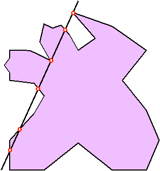

Problem K
The Ridiculous Game
Mohammad
likes playing with scissors and papers. Recently, he has found a ridiculous
geometric game in one of the ancient books of the Barareh city. He should start
with a simple polygon paper and cut it with scissors along a specified
direction. Finally, he should specify the shape of the resulted pieces of
papers. The polygon shown in figure 1 is a polygon which is cut into 4 pieces. But,
Mohammad thinks that this game is very ridiculous and boring, as after cutting
the paper, you can see the resulted pieces!!! Therefore, he decided to make it a
little bit amazing. Now, he wants to write a computer program to find the shape
of the resulted pieces without actually cutting the paper.
After
reading previous problems, you probably know that Mohammad is very lazy and he
needs your help to accomplish this task.

Figure 1. A polygon cut into 4 pieces
The Input
The
input consists of several test cases. The first line of each test case contains
a single integer , the number of vertices of polygon. Next lines each contain two
real numbers. These numbers indicate the coordinates of vertices of the polygon
in counter-clockwise order. The last line of each test case contains four real
numbers which indicate two
distinct points of the cutting line. The input will be terminated by a test
case with n equal to 0.
The Output
For
each test case, your program must output a line containing the phrase “Test Case #k”, in which k shows the index of current test case,
starting from 1. In next line, the program must output an integer P, the
number of resulted polygons after cutting. The next P lines each should describe
the coordinates of a resulting polygon with each two consecutive numbers separated by exactly one space character.
The vertices of each polygon should be printed
in counter-clockwise order with the first vertex being the vertex with the lowest
and leftmost (among the vertices with the lowest) coordinates. Also considering the output for each polygon as a sequence of floating-point numbers, the polygons should be output lexicographically i.e. the polygon having a lexicographically smaller sequence of floating-point numbers should be output first and so on. There should be
a blank line between the outputs of two consecutive test-cases.
For this problem please note
that:
1-
Two
floating-point numbers are considered equal if their absolute difference is
less than.
2-
Each
number should be printed with exactly 5 digits after the fraction point.
3-
The polygons appearing in the output should not have any 3 consecutive vertices that are colinear.
4-
The
given cutting line, can lay on edges of the given polygon.
Sample Input
7
10
0
10
6
8
10
5 6
2.5
11
0 6
0 0
10
6 -10 6
Sample Output
Test
Case #1
3
0.00000
0.00000 10.00000 0.00000 10.00000 6.00000 0.00000 6.00000
0.00000
6.00000 5.00000 6.00000 2.50000 11.00000
5.00000
6.00000 10.00000 6.00000 8.00000 10.00000
Amirkabir University of Technology - Local Contest - Round #2